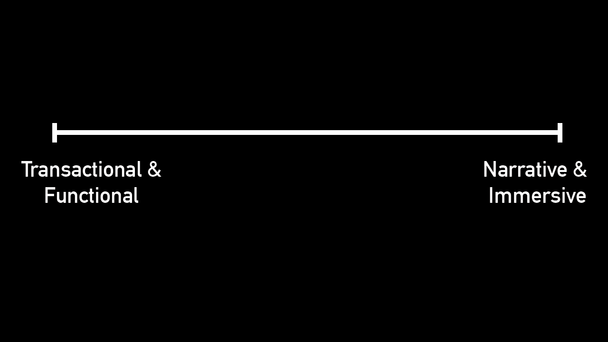

What was the last brandsite you visited?
How does this inform design?
Is this the right approach?
The web is for storytelling.
Every system is a story.

Let's plot some examples.
UX is about developing a shared a story.
Let's look at some helpful artifacts:
The process matters more than the "deliverables".
Tips for UX and story building:
Meet in person.
Start with sketches.
Work tangibly with paper and ink.
Design the exosystem, not just a site.
Explore several ideas.
How it works before how it looks
Be flexible, but have a strong point of view.